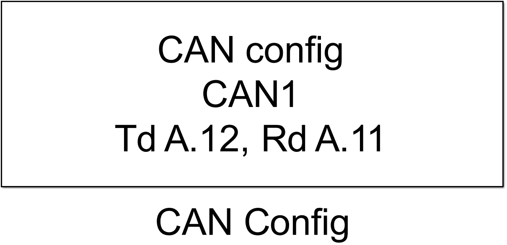
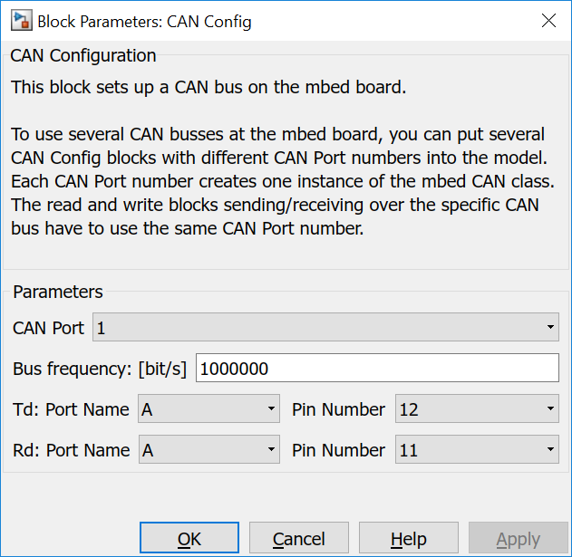
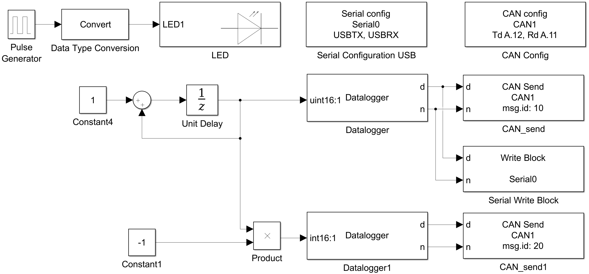
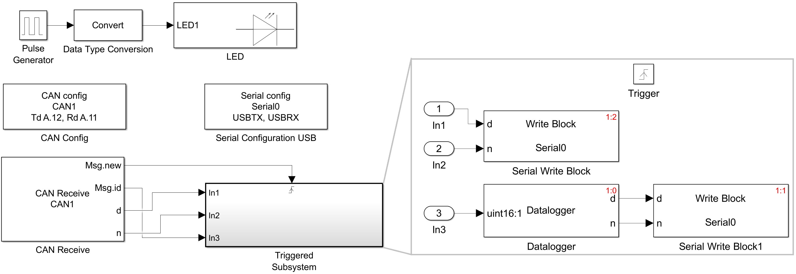
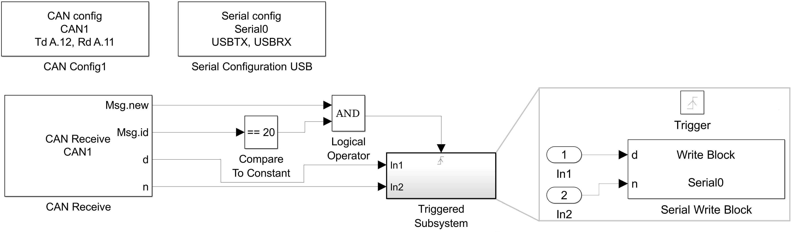

5.5.1. CAN Configuration
5.5.1.1. Description
This block sets up a CAN connection on the mbed board.
You must have one of these blocks in any model that ues CAN blocks.
{kind=link}
This block configures a CAN bus instnance using the selected Tx and Rx pins. The bus clock frequency can be configured.
When the model uses multiple CAN connections, for each one an own CAN Config block is necessary.
5.5.1.2. Parameters Dialog Box
CAN Port
Specifies an internally used CAN bus number. It is used to generate unique instance names when more CAN busses are included in the same model and to tie config, read and write blocks together.
CAN Frequency
Configures the CAN bus clock frequency.
Port Name/Pin Number (Td)
Selects the transmitting pin of the CAN peripheral.
Port Name/Pin Number (Rd)
Selects the receiving pin of the CAN peripheral.
5.5.1.3. Examples
Example 1
In the 1st example two mbed targets are connected over a CAN bus.
In each model a mbed CAN instance with CAN Port number 1 is created.
The sending model sends a positiv incrementing number converted to ASCII characters with CAN message ID 10 and the same but inverted number with CAN message ID 20. The positiv number is converted to ASCII characters and send over USB-CDC.
The receiving model triggers the submodel each time a CAN message is received. The submodel sends at first the message ID converted to ASCII characters and after that the message data over USB-CDC. To show the sending order the execution order in the subblock is enabled.
In each model LED1 blinks to indicate the running model.
Simulink model of sending target:
{kind=link}
Simulink model of receiving model:
{kind=link}
Example 2
The 2nd example shows an alternative receiving model. Only when a CAN messages with ID 20 is received the subblock is triggered. And the message data are send over USB-CDC.
{kind=link}
5.5.1.4. Code Generation
Instance names of mbed CAN classes are created by concatenating can and <CAN Port>.
Global parts
creates a global instance
CAN can<CAN Port>(P<Rd Port Name>_<Rd Pin Number>, P<Td Port Name>_<Td Pin Number>);
e.g.:
CAN can1(PA_11,PA_12);
Initialization Function
and one line in void <Model Name>_initialize(void) function
can<CAN Port>.frequency(<CAN Frequency>);
e.g.:
can1.frequency(1000000);
in <Model Name>.cpp.